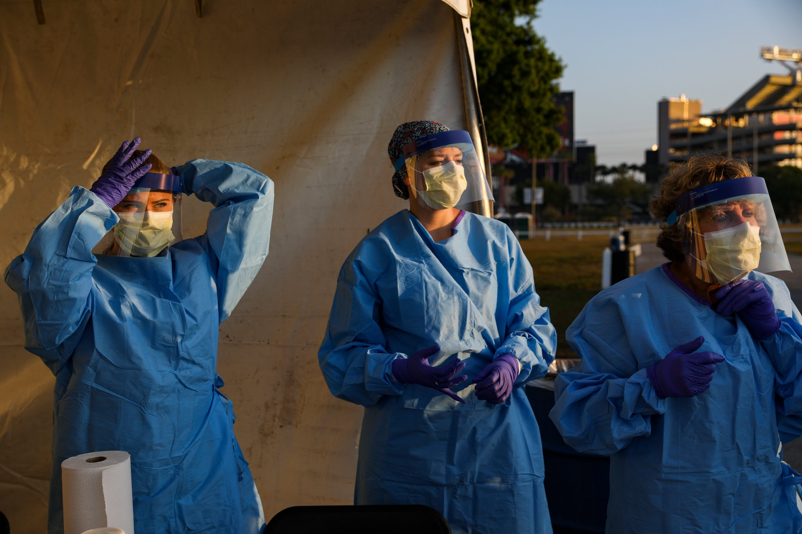
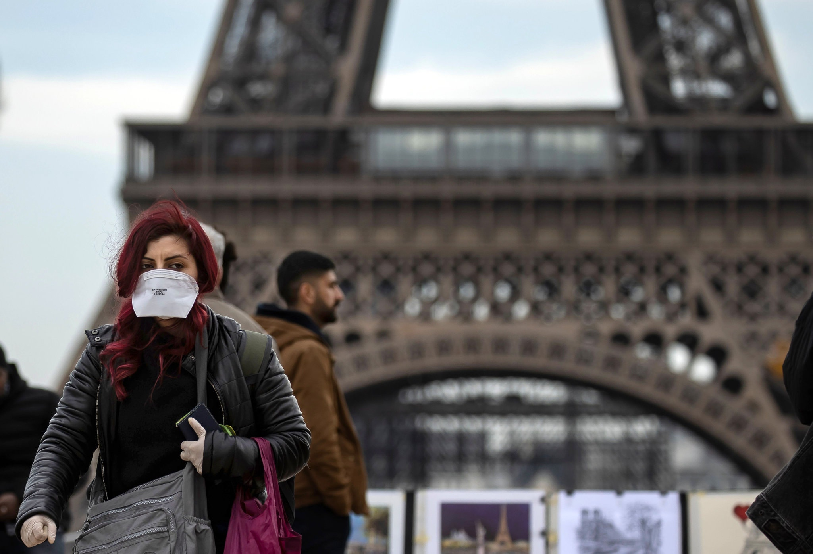
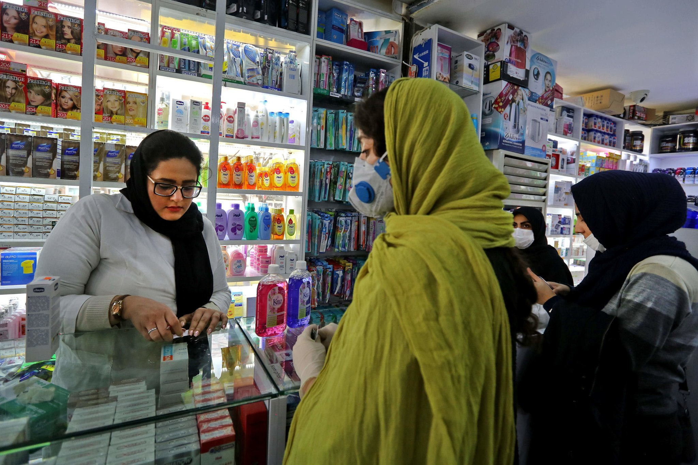
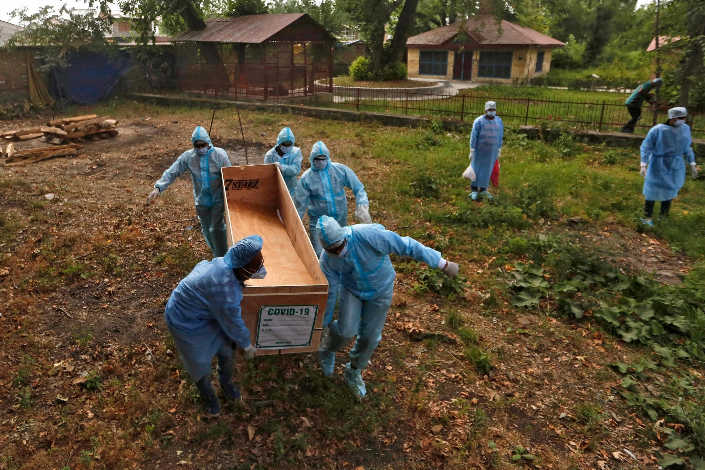
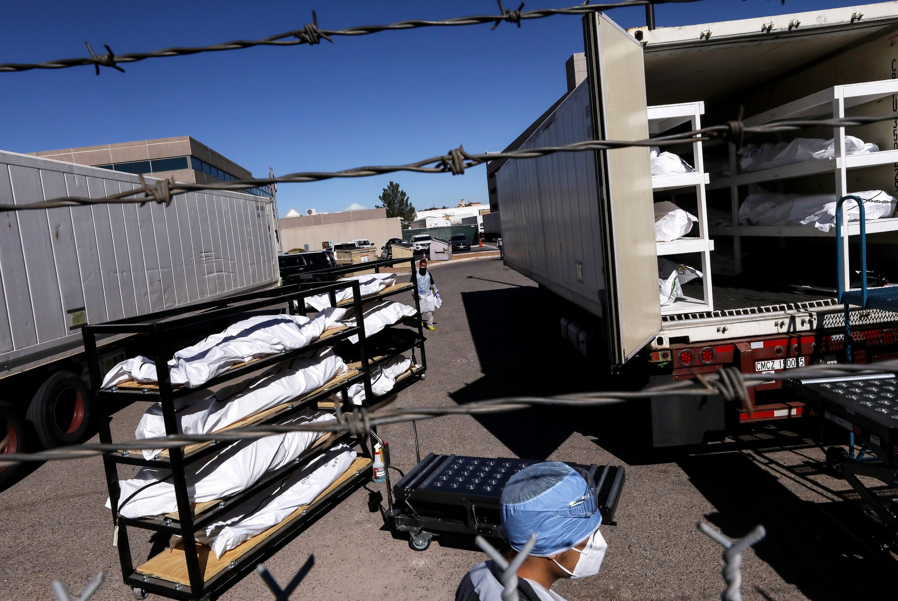
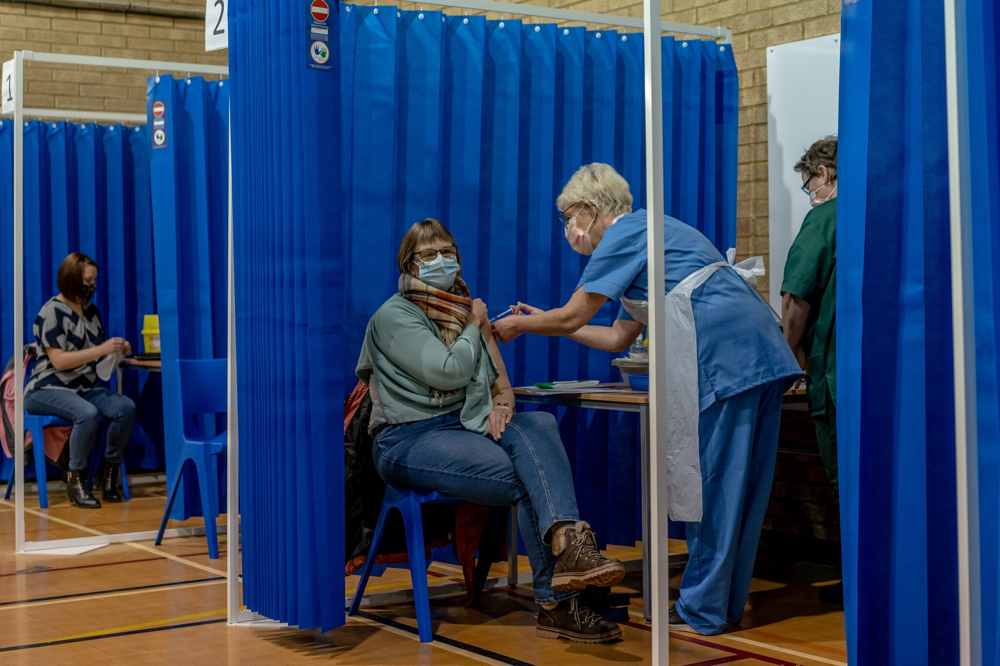

Worldwide Cases as of Today
A Timeline of the Coronavirus Pandemic
The outbreak of the virus has sickened more than 100 million people.
At least 2.5 million people have died. Here’s how the year unfolded.
The coronavirus, which surfaced in a Chinese seafood and poultry
market in December 2019, has spread to nearly every country, upending
life and derailing the global economy. The virus has killed more than
1.6 million and sickened more than 76 million over the last year. The
World Health Organization has
declared the situation a global pandemic. In early December 2020,
nations began the race to secure vaccines and a few Western countries
began administering shots to its most vulnerable populations, in an
effort to bring the virus under control.

Here’s a timeline of the outbreak over the past year.
Dec. 31, 2019
China alerts the World
Health Organization of 27 cases of “viral pneumonia” in the central
city of Wuhan. Authorities shut down a wet market in Wuhan the next
day, after discovering some patients were vendors or dealers.
Jan. 11, 2020
A 61-year-old man is
reported as the first death. Preliminary lab tests cited by Chinese
state media point to a new type of coronavirus.
Jan. 20
The first confirmed cases outside mainland China occurred in Japan,
South Korea and Thailand, according to the W.H.O.’s first situation
report. The first confirmed case in the United States came the next
day in Washington State, where a man in his 30s developed symptoms
after returning from a trip to Wuhan.
Jan. 23
China issues a lockdown for millions of people in Wuhan and Hubei
province as the death toll rises to 18. At this point, at least 17
people had died and more than 570 others had been infected, including
in Taiwan, Japan, Thailand, South Korea and the United States.
Jan. 30
The WHO declares the outbreak a public health emergency of
international concern.
Feb. 2
The first coronavirus death was reported outside China. A 44-year-old
man in the Philippines died after being infected, officials said, the
first death reported outside China. By this point, more than 360
people had died.
Feb. 11
The W.H.O. proposed an official name for the disease the virus causes:
Covid-19, an acronym that stands for coronavirus disease 2019. The
name makes no reference to any of the people, places, or animals
associated with the coronavirus, given the goal to avoid stigma.
Feb. 14
France announced the first coronavirus death in Europe. An 80-year-old
Chinese tourist died on Feb. 14 at a hospital in Paris, in what was
the first coronavirus death outside Asia, the authorities said. It was
the fourth death from the virus outside mainland China, where about
1,500 people had died, most of them in Hubei Province.

Feb. 23
Cases in Italy grew from fewer than five to more than 150. In the
Lombardy region, officials locked down 10 towns after a cluster of
cases suddenly emerged in Codogno, southeast of Milan. Schools closed
and sporting and cultural events were canceled.
Feb. 24
Iran announced its first two coronavirus cases on Feb. 19. Less than a
week later, the country said it had 61 coronavirus cases and 12
deaths, more than any other country at the time but China.

Feb. 26
Latin America reported its first case. Brazilian health officials said
that a 61-year-old São Paulo man, who had returned recently from a
business trip to Italy, tested positive for the coronavirus. It was
the first known case in Latin America.
Feb. 29
The United States reported a death. On Feb. 29, the authorities
announced that a patient near Seattle had died from the coronavirus,
in what was believed to be the first coronavirus death in the United
States at the time.
March 15
The Centers for Disease Control and Prevention advised no gatherings
of 50 or more people in the United States over the next eight weeks.
The recommendation included weddings, festivals, parades, concerts,
sporting events and conferences
March 26
The United States officially became the country hardest hit by the
pandemic, with at least 81,321 confirmed infections and more than
1,000 deaths. This was more reported cases than in China, Italy or any
other country at the time.
April 6
Prime Minister Boris Johnson moved into intensive care. Ten days after
going public with his coronavirus diagnosis, Prime Minister Boris
Johnson of Britain was moved into intensive care
April 26
By April 26, the coronavirus pandemic had killed more than 200,000
people and sickened more than 2.8 million worldwide, according to data
collected by The New York Times. The actual toll is higher by an
unknown degree, and will remain so for some time.
April 30
American Airlines and Delta Air Lines said they would require all
passengers and flight attendants to wear a face covering. Lufthansa
Group — which owns Lufthansa, Swiss International Air Lines and
Austrian Airlines — as well as JetBlue and Frontier Airlines had made
similar announcements.
May 27
Coronavirus deaths in the U.S. passed 100,000. Four months after the
government confirmed the first known case, more than 100,000 people
who had the coronavirus were recorded dead in the United States. The
death toll was far higher than in any other nation around the world.
June 11
Coronavirus cases in Africa topped 200,000. The W.H.O. said that it
took Africa 98 days to reach 100,000 coronavirus cases, but only 18
days for that figure to double. While the sharp rise in cases could be
explained by an increase in testing.
June 20
On June 20, for the third straight day, Florida and South Carolina
broke their single-day records for new cases. The news came as
infection levels for Missouri and Nevada also reached new highs. On
June 19, the United States reported more than 30,000 new infections,
its highest since May 1, with cases rising in 19 states across the
South, West and Midwest.
July 7
President Jair Bolsonaro of Brazil disclosed on July 7 that he had
been infected with the virus, saying that he was tested after
experiencing fatigue, muscle pain and a fever.
July 17
India on July 17 surpassed one million confirmed infections and 25,000
deaths. The milestones came as several states and cities had reimposed
total and partial lockdowns and as the country ranked third in the
world in infections behind the United States and Brazil.

Aug. 16
The C.D.C. began consulting with California, Florida, Minnesota and
North Dakota as well as Philadelphia to develop plans for distributing
a coronavirus vaccine. The agency chose the communities for a pilot
program because they represent different kinds of challenges as the
U.S. government prepared to begin the largest such campaign ever
undertaken.
Aug. 22
The global death toll from the coronavirus surpassed 800,000 on Aug.
22. The tally rose as new infections flared in Europe and high numbers
of deaths were recorded in the United States, India, South Africa and
most of Latin America.
Sep. 28
In the 10 months since a mysterious pneumonia began striking residents
of Wuhan, China, Covid-19 had killed more than one million people
worldwide — an agonizing toll compiled from official counts, yet one
that far understates how many had really died.
Oct. 2
President Trump tested positive for the virus. Mr. Trump had a fever,
congestion and a cough and was hospitalized at Walter Reed National
Military Medical Center. He returned to the White house on Oct. 5.
Oct. 24
President Andrzej Duda of Poland tested positive for the coronavirus
and went into isolation, officials said on Oct. 24.
Nov. 8
The United States reached 10 million coronavirus cases on Nov. 8, with
the last million added in 10 days time. The grim benchmark arrived as
the country struggled to contain outbreaks in the third and most
widespread wave of infection since the pandemic began.
Nov. 17
The Food and Drug Administration green lit the first rapid coronavirus
test that could be completed at home, without the need of a lab. The
test, which was developed by Lucira Health, requires a prescription
from a health care provider and can return results in about 30
minutes.
Nov. 18
The United States on Nov. 18 reached yet another grim milestone,
250,000 coronavirus-related deaths. That number was expected to
sharply increase as infections surged nationwide, particularly in the
Midwest and Mountain States.

Dec. 2
The U.K. approved Pfizer’s coronavirus vaccine. Britain gave emergency
authorization on Dec. 2 to Pfizer’s coronavirus vaccine, leaping ahead
of the United States to become the first Western country to allow mass
inoculations.
Dec. 8
The U.K. began vaccinations. The first person to receive a coronavirus
vaccination in the U.K. was Margaret Keenan, a 90-year-old former
jewelry shop assistant, followed by an 81-year-old man, William
Shakespeare.

Dec. 11
The F.D.A. authorized Pfizer’s Covid-19 vaccine for emergency use on
Dec. 11, clearing the way for millions of highly vulnerable people to
begin receiving the vaccine within days.
Dec. 18
The F.D.A. authorized the Covid-19 vaccine made by Moderna for
emergency use, allowing the shipment of millions more doses across the
nation.
{kind=link}
{kind=link}
{kind=link}
{kind=link}
{kind=link}
{kind=link}
{kind=link}
{kind=link}
{kind=link}
{kind=link}
{kind=link}
Source: The New York Times